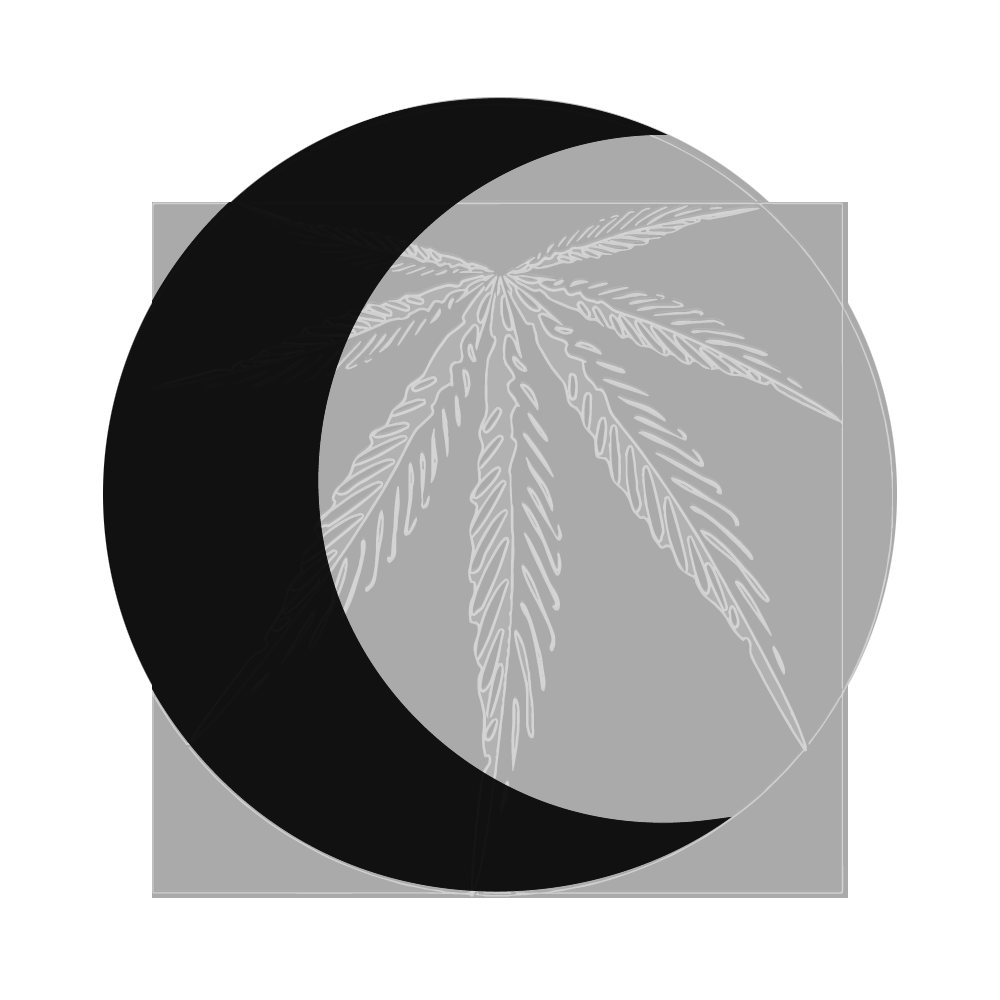

20 Wilderness Rd S
Calera, OK 74730
© All Rights Reserved
Privacy Policy
Terms and Conditions
You like cookies, right? They give you a better experience on this site and in life.
Ok, don't show again
Close